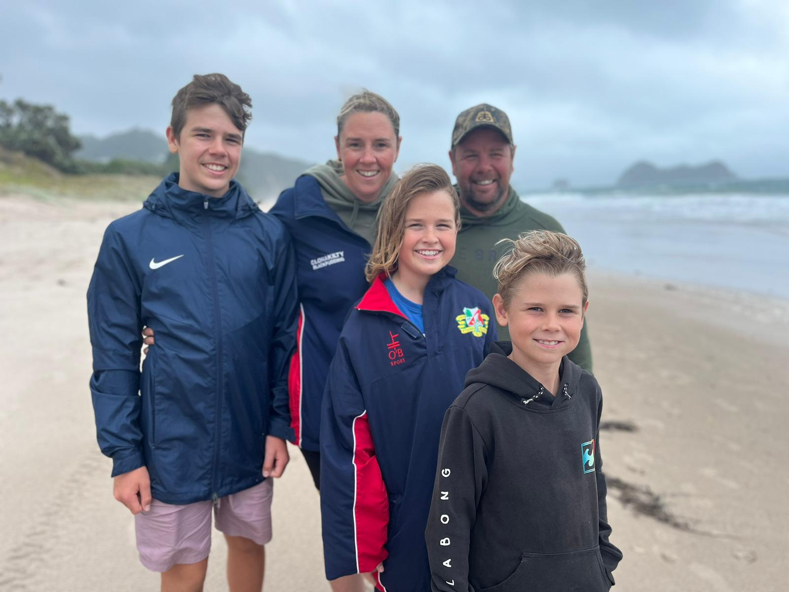
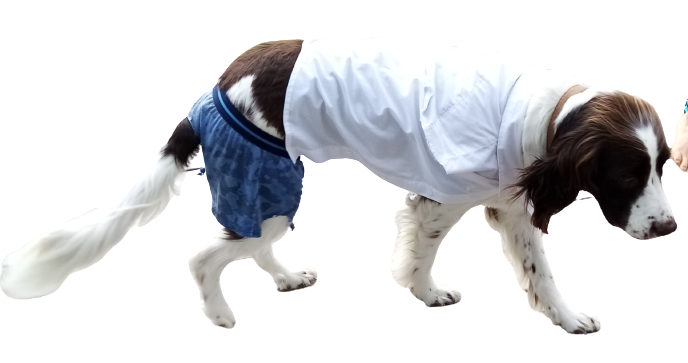

I live in Te Awamutu with my Mum and Dad, Ailsing and Kyle, my dog Flynn and my brothers, Darragh and Oísin. My Mum is Irish and half of my family lives in Ireland. We're going to see them in March this year, because we haven't been in over 5 years and my Aunty is getting Married. My Dad and the rest of my family are from and live in New Zealand. My dog Flynn is an English Springer Spaniel, he's very relaxed and never barks.
NEXT-->  